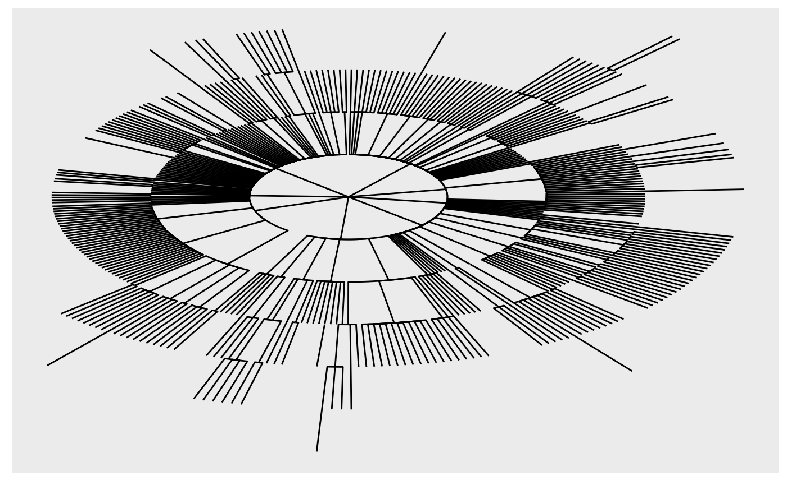

This article summarizes examples drawn from StackOverflow and elsewhere. Start by loading the rjsoncons and dplyr packages
Query and pivot
Data frame columns as NDJSON
https://stackoverflow.com/questions/76447100
This question presented a tibble where one column
contained JSON expressions.
df
#> # A tibble: 2 × 2
#> subject response
#> * <chr> <chr>
#> 1 dtv85251vucquc45 "{\"P0_Q0\":{\"aktiv\":2,\"bekümmert\":3,\"interessiert\":4,…
#> 2 mcj8vdqz7sxmjcr0 "{\"P0_Q0\":{\"aktiv\":1,\"bekümmert\":3,\"interessiert\":1,…The goal was to extract the fields of each P0_Q0 element
as new columns. The response column can be viewed as
NDJSON, so we can use pivot(df$response, "P0_Q0") for the
hard work, and bind_cols() to prepend subject
bind_cols(
df |> select(subject),
df |> pull(response) |> j_pivot("P0_Q0", as = "tibble")
)
#> # A tibble: 2 × 11
#> subject aktiv bekümmert interessiert `freudig erregt` verärgert stark schuldig
#> <chr> <int> <int> <int> <int> <int> <int> <int>
#> 1 dtv852… 2 3 4 2 2 0 1
#> 2 mcj8vd… 1 3 1 1 0 0 2
#> # ℹ 3 more variables: erschrocken <int>, feindselig <int>, angeregt <int>My initial
response was early in package development, and motivated
j_pivot() as an easier way to perform the common operation
of transforming a JSON array-of-objects to and R data
frame.
Constructing a pivot object using JMESPath
https://stackoverflow.com/questions/78029215
This question had an array of objects, each of which had a single unique key-value pair.
json <- '{
"encrypted_values":[
{"name_a":"value_a"},
{"name_b":"value_b"},
{"name_c":"value_c"}
]
}'The goal was to create a tibble with keys in one column, and values
in another. jsonlite::fromJSON() or
j_pivot(json, "encrypted_values") simplify the result to a
tibble with a column for each object key, which is not desired.
jsonlite::fromJSON(json)$encrypted_values
#> name_a name_b name_c
#> 1 value_a <NA> <NA>
#> 2 <NA> value_b <NA>
#> 3 <NA> <NA> value_c
j_pivot(json, "encrypted_values", as = "tibble")
#> # A tibble: 3 × 3
#> name_a name_b name_c
#> <list> <list> <list>
#> 1 <chr [1]> <NULL> <NULL>
#> 2 <NULL> <chr [1]> <NULL>
#> 3 <NULL> <NULL> <chr [1]>Instead, write a JMESPath query that extracts an object with the keys
as one element, and values as another. This uses @ to
represent the current mode, and keys() and
values() functions to extract associated elements. The
trailing [] converts an array-of-arrays of keys (for
example) to a simple array of keys.
query <- '{
name : encrypted_values[].keys(@)[],
value: encrypted_values[].values(@)[]
}'
j_pivot(json, query, as = "tibble")
#> # A tibble: 3 × 2
#> name value
#> <chr> <chr>
#> 1 name_a value_a
#> 2 name_b value_b
#> 3 name_c value_cReading from URLs
https://stackoverflow.com/questions/78023560
This question illustrates rjsoncons ability to
read URLs; the query itself extracts from the fixtures
array of objects specific nested elements, and is similar to the
previous question. In practice, I used
json <- readLines(url) to create a local copy of the
data to use while developing the query.
url <- "https://www.nrl.com/draw//data?competition=111&season=2024"
query <- 'fixtures[].{
homeTeam: homeTeam.nickName,
awayTeam: awayTeam.nickName
}'
j_pivot(url, query, as = "tibble")
#> # A tibble: 8 × 2
#> homeTeam awayTeam
#> <chr> <chr>
#> 1 Sharks Dolphins
#> 2 Raiders Cowboys
#> 3 Rabbitohs Broncos
#> 4 Wests Tigers Titans
#> 5 Warriors Storm
#> 6 Eels Roosters
#> 7 Sea Eagles Dragons
#> 8 Knights PanthersThe easiest path to a more general answer (extract all members of ‘homeTeam’ and ‘awayTeam’ as a tibble) might, like the posted answer, combine JSON extraction and tidyr.
query <- 'fixtures[].{ homeTeam: homeTeam, awayTeam: awayTeam }'
j_pivot(url, query, as = "tibble") |>
tidyr::unnest_wider(c("homeTeam", "awayTeam"), names_sep = "_")
#> # A tibble: 8 × 8
#> homeTeam_teamId homeTeam_nickName homeTeam_teamPosition homeTeam_theme
#> <int> <chr> <chr> <list>
#> 1 500028 Sharks 2nd <named list [2]>
#> 2 500013 Raiders 5th <named list [2]>
#> 3 500005 Rabbitohs 16th <named list [2]>
#> 4 500023 Wests Tigers 17th <named list [2]>
#> 5 500032 Warriors 10th <named list [2]>
#> 6 500031 Eels 14th <named list [2]>
#> 7 500002 Sea Eagles 11th <named list [2]>
#> 8 500003 Knights 13th <named list [2]>
#> # ℹ 4 more variables: awayTeam_teamId <int>, awayTeam_nickName <chr>,
#> # awayTeam_teamPosition <chr>, awayTeam_theme <list>Deeply nested objects
https://stackoverflow.com/questions/77998013
The details of this question are on StackOverflow, and the following code chunks are not evaluated directly. The example has several interesting elements:
-
The JSON is quite large (about 90 Mb), so processing is not immediate. While developing the query, I focused on a subset of the data for a more interactive experience.
Crime2013 <- j_query(json, "x.calls[9].args") JSON array indexing is 0-based, in contrast to 1-based R indexing.
-
In developing the JSON query, I spent quite a bit of time viewing results using
listviewer::jsonedit(), e.g.,listviewer::jsonedit(j_query(Crime2013, "[0][*]"))
The objects of interest are polygon coordinates nested deeply in the JSON, at the location implied by JMESPath. One polygon is at
query <- "x.calls[9].args[0][0][0][0]"
j_pivot(json, query, as = "tibble")
## # A tibble: 27 × 2
## lng lat
## <dbl> <dbl>
## 1 -43.3 -22.9
## 2 -43.3 -22.9
## 3 -43.3 -22.9
## 4 -43.3 -22.9
## 5 -43.3 -22.9
## 6 -43.3 -22.9
## 7 -43.3 -22.9
## 8 -43.3 -22.9
## 9 -43.3 -22.9
## 10 -43.3 -22.9
## # ℹ 17 more rows
## # ℹ Use `print(n = ...)` to see more rowsThere are 3618 of these polygons, and they are extracted by using a
wild-card * in place of an index 0 at a
particular place in the path.
query <- "x.calls[9].args[0][*][0][0]"
j_pivot(json, query, as = "tibble")
## # A tibble: 3,618 × 2
## lng lat
## <list> <list>
## 1 <dbl [27]> <dbl [27]>
## 2 <dbl [6]> <dbl [6]>
## 3 <dbl [5]> <dbl [5]>
## 4 <dbl [42]> <dbl [42]>
## 5 <dbl [6]> <dbl [6]>
## 6 <dbl [8]> <dbl [8]>
## 7 <dbl [4]> <dbl [4]>
## 8 <dbl [6]> <dbl [6]>
## 9 <dbl [13]> <dbl [13]>
## 10 <dbl [12]> <dbl [12]>
## # ℹ 3,608 more rows
## # ℹ Use `print(n = ...)` to see more rowstidyr::unnest() could be used to create a ‘long’ version
of this result, as illustrated in my response.
While exploring the data, the JMESPath function length()
suggested two anomalies in the data (not all paths in
Crime2013 have just one polygon; a path used to identify
polygons has only 2022 elements, but there are 3618 polygons); this
could well be a misunderstanding on my part.
JSONPath wildcards
https://stackoverflow.com/questions/78029215
This question retrieves a JSON representation of the hierarchy of departments within German reseach institutions. The interest is in finding the path between two departments.
The answer posted on StackOverflow translates the JSON list-of-lists structure describing the hierarchy into an R list-of-lists and uses a series of complicated manipulations to form a tibble suitable for querying.
The approach here recognizes this as a graph-based problem. The goal is to construct a graph from JSON, and then use graph algorithms to identify the shortest path between nodes.
I followed @margusl to extract JSON from the web page.
library(rvest)
html <- read_html("https://www.gerit.org/en/institutiondetail/10282")
## scrape JSON
xpath <- '//script[contains(text(),"window.__PRELOADED_STATE__")]'
json <-
html |>
html_element(xpath = xpath) |>
html_text() |>
sub(pattern = "window.__PRELOADED_STATE__ = ", replacement = "", fixed = TRUE)I then used listviewer to explore the JSON interactively, to get a feel for the structure.
listviewer::jsonedit(json)Obtain the root of the institutional hierarchy with a simple path traversal, using JSONPath syntax. JSONPath provides ‘wild-card’ syntax, which is convenient when querying hierarchical data representations.
It looks like each institution is a (directed, acyclic) graph, with nodes representing each division in the institution.
The nodes are easy to reconstruct. Look for keys id,
name.de, and name.enusing the wild-card
.., meaning ‘at any depth’. Each of these queries returns a
vector. Use them to construct a tibble. Although the id key
is an integer in the JSON, it seems appropriate to think of these as
character-valued.
## these are all nodes, including the query node; each node has an
## 'id' and german ('de') and english ('en') name.
nodes <- tibble(
## all keys 'id' , 'name.de', and 'name.en', under 'tree' with
## wild-card '..' matching
id =
j_query(tree, "$..id", as = "R") |>
as.character(),
de = j_query(tree, "$..name.de", as = "R"),
en = j_query(tree, "$..name.en", as = "R")
)There are 491 nodes in this institution.
nodes
#> # A tibble: 491 × 3
#> id de en
#> <chr> <chr> <chr>
#> 1 10282 "Universität zu Köln" Univ…
#> 2 14036 "Fakultät 1: Wirtschafts- und Sozialwissenschaftliche Fakult… Facu…
#> 3 176896857 "Cologne Graduate School in Management, \rEconomics and Soci… Colo…
#> 4 537375237 "ECONtribute: Markets & Public Policy" ECON…
#> 5 439201502 "Fachbereich Volkswirtschaftslehre" Econ…
#> 6 202057753 "Center for Macroeconomic Research (CMR)" Cent…
#> 7 228480345 "Seminar für Energiewissenschaft" Chai…
#> 8 237641982 "Seminar für Experimentelle Wirtschafts- und Verhaltensforsc… Semi…
#> 9 352878120 "Seminar für Industrieökonomik und angewandte Mikroökonometr… Indu…
#> 10 417277679 "Seminar für Medienökonomie" Semi…
#> # ℹ 481 more rowsThe edges are a little tricky to reconstruct from the nested structure in the JSON. Start with the id and number of children of each node.
id <-
j_query(tree, "$..id", as = "R") |>
as.character()
children_per_node <- j_query(tree, "$..children.length", as = "R")I developed the edgelist() function (in the folded code
chunk below) to transform id and
children_per_node into a two-column matrix of from-to
relations. In the function, parent_id and
n_children are stacks used to capture the hierarchical
structure of the data. level represents the current level
in the hierarchy. The algorithm walks along the id input,
records the from/to relationship implied by n, and then
completes that level of the hierarchy (if
n_children[level] == 0), pushes the next level onto the
stack, or continues to the next id.
edgelist <- function(id, n) {
stopifnot(identical(length(id), length(n)))
parent_id <- n_children <- integer()
from <- to <- integer(length(id) - 1L)
level <- 0L
for (i in seq_along(id)) {
if (i > 1) {
## record link from parent to child
from[i - 1] <- tail(parent_id, 1L)
to[i - 1] <- id[i]
n_children[level] <- n_children[level] - 1L
}
if (level > 0 && n_children[level] == 0L) {
## 'pop' level
level <- level - 1L
parent_id <- head(parent_id, -1L)
n_children <- head(n_children, -1L)
}
if (n[i] != 0) {
## 'push' level
level <- level + 1L
parent_id <- c(parent_id, id[i])
n_children <- c(n_children, n[i])
}
}
tibble(from, to)
}The matrix of edges, with columns from and
to, is then
edges <- edgelist(id, children_per_node)
edges
#> # A tibble: 490 × 2
#> from to
#> <chr> <chr>
#> 1 10282 14036
#> 2 14036 176896857
#> 3 14036 537375237
#> 4 14036 439201502
#> 5 439201502 202057753
#> 6 439201502 228480345
#> 7 439201502 237641982
#> 8 439201502 352878120
#> 9 439201502 417277679
#> 10 439201502 281586912
#> # ℹ 480 more rowsThe computation is tricky, but not too inefficient. There are only
two queries of the JSON object (for id and
children_per_node) and the R iteration over
elements of id is not too extensive.
I used the tidygraph package to represent the graph from the nodes and edges.
tg <- tidygraph::tbl_graph(nodes = nodes, edges = edges, node_key = "id")
tg
#> # A tbl_graph: 491 nodes and 490 edges
#> #
#> # A rooted tree
#> #
#> # Node Data: 491 × 3 (active)
#> id de en
#> <chr> <chr> <chr>
#> 1 10282 "Universität zu Köln" Univ…
#> 2 14036 "Fakultät 1: Wirtschafts- und Sozialwissenschaftliche Fakult… Facu…
#> 3 176896857 "Cologne Graduate School in Management, \rEconomics and Soci… Colo…
#> 4 537375237 "ECONtribute: Markets & Public Policy" ECON…
#> 5 439201502 "Fachbereich Volkswirtschaftslehre" Econ…
#> 6 202057753 "Center for Macroeconomic Research (CMR)" Cent…
#> 7 228480345 "Seminar für Energiewissenschaft" Chai…
#> 8 237641982 "Seminar für Experimentelle Wirtschafts- und Verhaltensforsc… Semi…
#> 9 352878120 "Seminar für Industrieökonomik und angewandte Mikroökonometr… Indu…
#> 10 417277679 "Seminar für Medienökonomie" Semi…
#> # ℹ 481 more rows
#> #
#> # Edge Data: 490 × 2
#> from to
#> <int> <int>
#> 1 1 2
#> 2 2 3
#> 3 2 4
#> # ℹ 487 more rowsI then used convert() to find the graph with the
shortest path between two nodes, and extracted the tibble of nodes.
tg |>
## find the shortest path between two nodes...
tidygraph::convert(
tidygraph::to_shortest_path,
de == "Fakultät 1: Wirtschafts- und Sozialwissenschaftliche Fakultät",
de == "Professur Hölzl"
) |>
## extract the nodes from the resulting graph
as_tibble("nodes") |>
select(id, de)
#> # A tibble: 5 × 2
#> id de
#> <chr> <chr>
#> 1 14036 Fakultät 1: Wirtschafts- und Sozialwissenschaftliche Fakultät
#> 2 222785602 Fakultätsbereich Soziologie und Sozialpsychologie
#> 3 18065 Institut für Soziologie und Sozialpsychologie (ISS)
#> 4 18068 Lehrstuhl für Wirtschafts- und Sozialpsychologie
#> 5 309061914 Professur HölzlThis is the answer to the question posed in the StackOverflow post.
It can be fun to try and visualize the graph, e.g., using ggraph
ggraph::ggraph(tg, "tree", circular = TRUE) +
ggraph::geom_edge_elbow()
Patch
Moving elements
https://stackoverflow.com/questions/78047988
The example is not completely reproducible, but the challenge is that the igraph package produces JSON like
data <- '
{
"nodes": [
{
"name": "something"
},
{
"name": "something_else"
}
],
"links": [
{
"source": "something",
"target": "something_else"
}
],
"attributes": {
"directed": false
}
}'but the desired data moves the ‘directed’ attribute to a top-level
field. From the JSON patch
documentation, the patch is a single ‘move’ operation from
/attributes/directed to the top-level /:
patch <- '[
{"op": "move", "from": "/attributes/directed", "path": "/directed"}
]'The patch is accomplished with
patched_data <- j_patch_apply(data, patch)This JSON string could be visualized with
listviwer::jsonedit(patched_data), or
patched_data |> as_r() |> str(), or
patched_data |>
jsonlite::prettify()
#> {
#> "nodes": [
#> {
#> "name": "something"
#> },
#> {
#> "name": "something_else"
#> }
#> ],
#> "links": [
#> {
#> "source": "something",
#> "target": "something_else"
#> }
#> ],
#> "attributes": {
#>
#> },
#> "directed": false
#> }
#> Session information
sessionInfo()
#> R version 4.4.0 (2024-04-24)
#> Platform: x86_64-pc-linux-gnu
#> Running under: Ubuntu 22.04.4 LTS
#>
#> Matrix products: default
#> BLAS: /usr/lib/x86_64-linux-gnu/openblas-pthread/libblas.so.3
#> LAPACK: /usr/lib/x86_64-linux-gnu/openblas-pthread/libopenblasp-r0.3.20.so; LAPACK version 3.10.0
#>
#> locale:
#> [1] LC_CTYPE=C.UTF-8 LC_NUMERIC=C LC_TIME=C.UTF-8
#> [4] LC_COLLATE=C.UTF-8 LC_MONETARY=C.UTF-8 LC_MESSAGES=C.UTF-8
#> [7] LC_PAPER=C.UTF-8 LC_NAME=C LC_ADDRESS=C
#> [10] LC_TELEPHONE=C LC_MEASUREMENT=C.UTF-8 LC_IDENTIFICATION=C
#>
#> time zone: UTC
#> tzcode source: system (glibc)
#>
#> attached base packages:
#> [1] stats graphics grDevices utils datasets methods base
#>
#> other attached packages:
#> [1] rvest_1.0.4 dplyr_1.1.4 rjsoncons_1.3.0.9100
#>
#> loaded via a namespace (and not attached):
#> [1] viridis_0.6.5 sass_0.4.9 utf8_1.2.4 generics_0.1.3
#> [5] tidyr_1.3.1 xml2_1.3.6 digest_0.6.35 magrittr_2.0.3
#> [9] evaluate_0.23 grid_4.4.0 fastmap_1.2.0 jsonlite_1.8.8
#> [13] ggrepel_0.9.5 gridExtra_2.3 httr_1.4.7 purrr_1.0.2
#> [17] fansi_1.0.6 viridisLite_0.4.2 scales_1.3.0 tweenr_2.0.3
#> [21] textshaping_0.4.0 jquerylib_0.1.4 cli_3.6.2 graphlayouts_1.1.1
#> [25] rlang_1.1.4 polyclip_1.10-6 tidygraph_1.3.1 munsell_0.5.1
#> [29] withr_3.0.0 cachem_1.1.0 yaml_2.3.8 tools_4.4.0
#> [33] memoise_2.0.1 colorspace_2.1-0 ggplot2_3.5.1 curl_5.2.1
#> [37] vctrs_0.6.5 R6_2.5.1 lifecycle_1.0.4 fs_1.6.4
#> [41] MASS_7.3-60.2 ragg_1.3.2 ggraph_2.2.1 pkgconfig_2.0.3
#> [45] desc_1.4.3 pkgdown_2.0.9 pillar_1.9.0 bslib_0.7.0
#> [49] gtable_0.3.5 glue_1.7.0 Rcpp_1.0.12 ggforce_0.4.2
#> [53] systemfonts_1.1.0 highr_0.11 xfun_0.44 tibble_3.2.1
#> [57] tidyselect_1.2.1 knitr_1.47 farver_2.1.2 htmltools_0.5.8.1
#> [61] igraph_2.0.3 labeling_0.4.3 rmarkdown_2.27 compiler_4.4.0